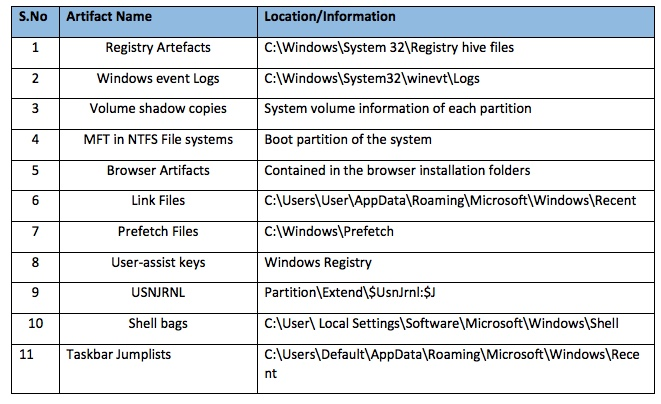
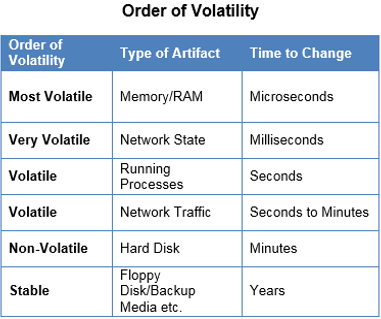

CS373 Weekly Writeups
Week 9 and 10
The computer landscape has changed drastically in the last decade with the introduction of mobile devices. Along with this massive shift is the software operating these devices, the mobile operating systems and the attacks intended to exploit these lite/skinny operating systems.
Per Kaspersky’s Lab, in 2017 they detected over 5.7 million malicious installation packages, over 94,000 mobile banking Trojans, and over 544,000 mobile ransomware Trojans.
Some of the trends they witnessed were:
- Rooting Malware
- Wireless Application Protocol (WAP) Billing Trojans
- Mobile Ransomware
Just how far has mobile malware come? Let’s take a quick look at it’s history first.
The Firsts
The first Android Botnet was discovered in 2010 and was distributed through third party markets in China. The purpose of the botnet was to establish a C&C communication and leak sensitive information to a remote server, download APK’s, and execute other commands given by the remote user. It also used TCP sockets to communicate and work with multiple instances on the same device.
The first iOS malware/worm was discovered in 2009. The malware targeted jailbroken iPhones through SSH connections. It acted as a ransomware, manipulating the device and requesting the user send $5 as payment to reset the phone to it’s previous settings and removal of the malware. This malware was possible due to SSH root access through poor password security and simplicity.
Present
In present day, mobile malware is much more sophisticated. They gain super-user rights by exploiting system vulnerabilities that allow the malware to install modules in system folders, allowing it to persist, even if the phone is reset to factory default settings. Most Android Trojans are distributed to through the Google Play Store.
In April 2017, Kaspersky Labs observed new rooting malware being distributed through the Google Play Store where it not only installed modules into the system, it also injected malicious code into the system runtime libraries. This malware was identified as Dvmap.
To bypass Google Play Store security checks, the malware creators used a very interesting method: they uploaded a clean app to the store at the end of March, 2017, and would then update it with a malicious version for a short period of time. Then they would upload a clean version back on Google Play the very same day. Another interesting component of the Trojan was that it could support 64-bit version and 32-bit version of Android, something that is considered rare.
WAP Billing Trojans were also popular in 2017. These Trojans would receive a list of links from a command and control server, follow them and click on page elements using a specific JavaScript file. It would visit pages with WAP subscriptions, with the money being taken from the user’s mobile account. A page with WAP billing usually redirects to a mobile operator page where the user confirms they agree to pay for the services.
Most security researches believe the up and coming malwares are modular Trojans used for crypto-currency mining. Due to the rise in the price of crypto-currency, Trojans that can assist in the mining efforts allow for a more profitable business. However, these malware’s can alert a end user of an infection since crypto mining is resource intensive, it can deplete a devices battery fairly quickly and lead to device failure.
Week 8
In this week we studied about message security, but in specific email message security. Per Symantec's 2017 Internet Security Threat Report (Volume 22), Symantec witnessed a resurgence of email as the favored attack channel. One in every 131 emails sent were malicious, the highest rate they've witnessed in 5 years.
Furthermore, the availability of spam botnets-for-hire , such as Necurs, allowed ransomware groups to mount massive email campaigns during 2016. It's believed spear-phishing emails were used in the DNC attacks of 2016.
Below are some statistics found within the Symantec 2017 ISTR.
Below is a link where you can download the 2017 Symantec ISTR:
2017 Symantec Internet Security Threat Report
A growing trend in email phishing is the Business email compromise fraud, most commonly known as BEC. Per the FBI's public service announcement in May 2017, BEC is defined as a sophisticated scam targeting businesses working with foreign suppliers and/or businesses that regularly perform wire transfer payments. In total, the scam has accounted for more than $5 billion dollars lost by victims of the scam. Between January 2015 and December 2016, there was a 2,370% increase in identified exposed losses.
Below is a link to the FBI's PSA:
FBI Business Email Compromise Public Service Announcement
Furthermore, the attackers are target specific industries known to operate/conduct financial transactions via wire transfers. In specific, certified public accountants, lawyers/law firms, and real estate firms. They will initiate transfer while impersonating a high ranking officer of the firm and funds are intended to arrive to a mule account. If the wire transfer is completed the client is fully liable since the transactions was initiated by the authorized signer's of the accounts.
However, there security researchers have found effective way's for filtering out spam emails. Per this week's lectures there are two known tools for detecting spam.
- Reputation driven information tools
- Content driven information tools
Also, in recent years there have been the development of various authentication methods for emails. In example:
- Sender Policy Framework (SPF) which is a simple email-validation system designed to detect email spoofing by providing a mechanism to allow receiving mail exchangers to check that incoming mail from a domain comes from a host authorized by that domain's administrators. The list of authorized sending hosts for a domain is published in the DNS records for that domain in the form of a specially formatted TXT record.
- Domain Keys Identified Mail (DKIM) which is an email authentication method designed to detect email spoofing. DKIM let's a domain associate it's name with an email message by affixing a digital signature to it. Verification is carried out using the signer's public key published in the DNS. A valid signature guarantees that some parts of the email (possibly including attachments) have not been modified since the signature was affixed.
- Domain Based Message Authentication Reporting and Conformance (DMARC) is an email-validation system designed and intended to combat certain techniques used in phishing and email spam, such as emails with forged sender addresses that appear to originate from legitimate organizations. DMARC is built on top of SPF and DKIM .
Week 7
This week we focused a lot on web attacks and exploits. Some of the attacks we discussed were:
- Main In The Middle Attacks
- Main In The Browser
- DNS Spoofing
- Same Origin Policy attacks
- Cross Site Scripting Attacks (XSS)
But the one attack that did catch my attention was the SQL injection attacks.
Last week I mentioned how as a fraud investigator for banks I witnessed online banking fraud in which clients were attacked via Man In The Middle attacks, in which the bad actors would intercept the online banking session, modify or create new wire instructions unbeknown to the bank and client and the funds would leave the bank unnoticed. This was one fraud affecting one payment channel.
But by far the largest case, and most notorious case, worked by fraud investigators in South Florida was the Alberto Gonzalez card fraud case. Alberto Gonzalez at the time was working as an informant for the Secret Service who always had an interest in WiFi hackings. While driving down U.S.1 ( a road that runs along the South Florida coast line) he noticed several big merchants using poor WiFi encryption and security standards. This included retail stores such as T.J. Maxx, BJ's Wholesale Club, Dave and Busters and more.
Alberto Gonzalez, along with some accomplices, devised a plot to intrude the networks of these retail merchants and used a SQL injection to query the stores payment card accounts. This was done over a period of several months, little by little, and in the end they extracted more than 180 million payment card accounts and more than 200 million in losses to banks due to their fraud. See link to the article below. It is considered to this day, one of the most successful cyber heists known, even more successful than the Target heist in 2015.
New York Times - The Great Cyberheist
Another topic I wanted to research more was why is Adobe Flash hated and considered extremely vulnerable.
What I found was that Adobe Flash is 21 years old and over the years it had to be able to deal with many different OS's, standards, and all the quirky restrictions they brought along with them.
Most of the work done on Flash is aimed at keeping it up-to-date with the latest technologies, adding more and more features over time. This doesn't leave much time for reviewing old code for potential security issues.
Combining these two factors gives a perfect recipe for long lasting bugs buried deep in the code. Furthermore, I attempted to study a Flash player exploit to understand what the vulnerabilities are.
Back in 2015, an Italian company called Hacking Team was hacked and suffered a major data breach, more than 400GB of the company's confidential data was made public. The exploit, known as Adobe Flash Player ActionScript 3 ByteArray Use After Free Remote Memory Corruption Vulnerability (take some time to digest that title), is detailed as follows:
For more information about this exploit you can visit the following links:
Luckily, Adobe is finally pulling the plug on Flash. Adobe will stop distributing and updating the media player by the end of 2020.
Week 6
This week we discussed multiple ways to defend and attack a network. In specific, we discussed the following protection strategies:
- Having a policy for both positive and negative movement within the network. This includes applications, HTTP traffic and more
- Having a firewall designated as the network's DMZ. Network segmentation within the DMZ/firewall is critical.
- Have a layered defense. This includes not only having a firewall, but having a intrusion detection system, a security information and event management system (i.e. LogRythm) and ensuring that these system can talk to each other via functioning API's. This is important since most of these systems may come from different applications and vendors.
- Intrusion detection which is the searching and monitoring for things you DON'T want to happen on your network. However, this does have its limitation. In example, does may not help you in your efforts to detect attacks involving zero day vulnerabilities.
- Quarantine hosts that may be infected so the infection does not spread across the network to other hosts. This could also include a blacklist component
Other examples of strategies include honeypots/honeynet's and reputation.
Other topics also discussed in the lecture were attacks against networks. One in particular I found interesting was Man In the Middle Attacks (MITM).

Having worked as a fraud investigator, I investigated various cases of fraud in which bank users/clients were victims of online banking and wire fraud. Most of which was perpetrated via MITM attacks. This mounted to large losses for the financial institutions who paid out such claims to the clients who losses were not reimbursed by the same banks.
In our investigations, our immediate source for review was the online banking session logs. Most often than not, we would find various session log in and activity from multiple IP addresses in concurrency with the legitimate user's activity (i.e. while the bank client was performing a balance inquiry via an IP address in Venezuela, another user was performing a wire transfer request via an IP address in Russia, both using the same session ID). These investigations proved frustrating but I was interested how these attacks could be carried out against sophisticated online banking platforms. Most often than not, the client's devices were unpatched and poorly secured.
One part of the lecture that interested me regarding man in the middle attacks was SSL renegotiation attacks. Renegotiation is required when no client-server authentication is initially required while making an SSL connection but is required later. Thus instead of dropping and creating a new SSL connection, renegotiation adds authentication details to the current connection.
However renegotiation is vulnerable to attacks. Two worries are:
- A man in the middle attacker can inject data into an HTTPS session and execute requests on behalf of the victim
- Denial of Service (DoS), by establishing a secure SSL connection requires more processing power on the server, an attacker can exploit this processing power property with renegotiation to trigger hundreds of handshakes in the same TCP connection.
There are ways to mitigate these threats. Some are:
- Renegotiation is not required by the majority of the sites. Disable SSL renegotiation support on the server
- Limit the number of SSL handshakes, or upgrade server resources by adding an SSL accelerator
Below is a link to a proof of concept for TLS renegotiation and its vulnerability in which an attacker can perform a DoS attack.

Week 5
A rootkit is one of the most difficult types of malware to find and remove. Once a rootkit installs itself on your computer, it will boot up at the same time as your PC. There are various forms of rootkits which different degrees of severity. Below is an illustration of the layered differences in the severity:

In week 5 lecture, we discussed about the most severe rootkits which are the kernel rootkits. This type of rootkit is designed to function at the level of the operating system itself. This means the rootkit can effectively add new code to the OS, or even delete and replace OS code.
Rootkits have a tendency to target important structures within the Windows operating system for the purposes of stealth and persistence. This is also known as hooking. Below are some examples:
- System Service Descriptor Table (SSDT) - is an internal dispatch table within Microsoft Windows. This is a structure that is normally "hooked" by a rootkit. The SSDT table holds the pointer to kernel functions, which are used upon system call invocation.
- Interrupt Descriptor Table (IDT) - is used by the processor to determine the correct response to interrupts and exceptions. Some Windows programs hook calls to the IDT. This involves writing a kernel mode driver that intercepts calls to the IDT and adds in it's own processing.
Below is a simple example of how a rootkit can manipulate calls to the IDT.


Furthermore, below is an article of a rootkit attack involving the Windows SSDT.
InfoSec Article - SSDT Hooking
Most recently, bad actors have started to migrate towards to digital certificates as a means to successfully installing malware on a victims machine. A certificate is issued by an organization recognized as "trusted' by the parties involved and is used ordinarily for operations of public key cryptography.
However, digital certificates can be used abused to conduct illicit activities like cyber espionage, sabotage or aid in the dissemination of malware. This is a highly valuable asset for actors since it can grant their application low level access to the victims machine.

Week 4
In Week 4, the lectures centered around the topic of vulnerabilities and exploitation. In specific we studied the more common methods in which attackers use to gain access inside a network defensive perimeter, and that's the internet browser.
Nowadays, most business have strong DMZ and firewalls to protect the business from attacks outside the perimeter, but as we've learned in this course, a business is only as strong as its weakest link. In modern times, attackers employ social engineering tactics to gain access inside a network. One strategy that employs social engineering along with sophisticated attacks is having the user visit a page, have the page load JavaScript code that will take advantage of a browser function or vulnerability.
This week we discussed two ways we can manipulate memory via the stack through the browser.
- Stack Smashing / Memory Corruption
- Use After Free Vulnerabilities
Stack Smashing
In order to corrupt the stack, we need to a few things as per the lectures:
- Perform a crash triage
- Determine the return address offset
- Position our shellcode
- Find the address of our shell code so it can "live" on the stack
A stack smash occurs when the stack buffer is filled with data supplied from an untrusted user and the data is corrupts the stack and malicious executable code is injected into the stack. The code is executed when the stack attempts to perform a return to a function via the return address on EIP, but the attacker uses a NOP slide to position EIP to their malicious code on the stack.
For reference, as mentioned in the lectures, a NOP slide is a sequence of no operations meant to "slide" the CPU's instruction pointer to a desired destination whenever the program branches to a memory address anywhere on the slide.

Operating systems have now implemented various protection schemes to protect against a stack smash. In my research I found these protections can be classified into three categories:
- Detect the stack buffer overflow has occurred and prevent redirection of EIP to the malicious code
- Prevent the execution of malicious code from the stack without directly detecting the stack buffer overflow
- Randomize the memory space such that finding executable code becomes unreliable (i.e. Address Space Layout Randomization / ASLR)
Use-After-Free
Use after free is another method used to exploit memory via the browser. This vulnerability is triggered when an object in memory is freed and then reference later by the application, but the attacker has control of the freed object/memory. In order for this the following conditions must be present for the attacker to exploit:
- Load shellcode in memory at a predictable address
- Force an object to be freed and then overwrite it with one that includes a virtual table pointer (VPTR) linked to a fake vtable (virtual table) pointing to the shellcode loaded in step 1
- Trigger a vulnerability in the browser to reuse the freed object (which now has malicious pointers inserted by the attacker) and redirect execution flow to the shellcode loaded in memory
Below is a diagram showing the flow of a use-after-free exploit:

Modern browsers, like Microsoft's Edge in Windows 10, have functions in place to mitigate use after free exploits. Recently, Microsoft introduced MemGC which prevents the freeing of memory chunks if references to them are found. MemGC checks the registers and the stack for chunk references, and in addition, scans the contents of MemGC managed chunks for references.
Below is flowchart of how MemGC works:

For more information you can click on the link below. It's an article from LinkedIn on a BlackHat session in which the presenter discusses MemGC.
MemGC: Use-After-Free Exploit Mitigation In Edge and IE In Windows 10
Tools
Also, in the lecture we discussed how WinDbg is a great tool for establishing breakpoints in applications and examining the applications assembly code. WinDbg is also extremely useful when attempting to review the stack and heap starting points, strings in the applications, and register contents, including the instruction pointer.
WinDbg can also be used to install breakpoints in running process/applications. Allowing a user to observe behavior incrementally in real time. Below is an article discussing debugging malware with WinDbg

Week 3
The last weeks we've talked about malware dissection and offense, but this week we discussed malware defense. There are various ways to protect your network infrastructure from malware defense, but in my research, I found nothing is more effective than network segmentation and virtualization. By layering your defense, you make it difficult for malware to penetrate your network infrastructure and in the event they succeed, make it difficult in scanning and exporting valuable data.
As discussed in the lecture, there are static and behavioral methodologies in detecting potential device compromises. Some examples include:
- Network firewalls
- Install antivirus on hosts
- Access control policy
- Group policy for particular divisions of a business
- Host agents that report on suspicious files and behavior anomalies
Furthermore, there are tools simple enough to aid your efforts for malware defense. In the lecture, we discussed Yara and Cuckoo. Tools simple enough and open source that allow it to be used by large to small businesses and personal consumers. These applications allow you to create rules where you define certain information to find when scanning files and directories.
There are other open source projects that involve the monitoring of host machine behaviors. One example is the Open Source HIDS Security or OSSEC. Per the documentation on OSSEC GitHub's page, OSSEC is actively monitoring all aspects of Unix system activity with file integrity monitoring. Log monitoring, rootcheck, and process monitoring. A commercial counterpart to this project is Carbon Black.
Furthermore, through virtualization, IT professionals can now deploy virtualized app and desktop solutions for applications considered high risk, specifically applications with access to the external internet (i.e. web browsers). By hosting applications on VDI's, if a user visits a site with malware injection the malware only affects the virtual system and is denied access to the host or server hosting the virtual session. This makes it easy to quarantine and remove the infected virtualization and restore a recent backup.

Week 2
This week there were several topics that struck a note with me. The lectures had a strong focus on standard procedures for obtaining computer forensic evidence. We also discussed the following:
- Challenges in obtaining forensic data from a standard/conventional hard drive vs an SSD hard drive
- The order of volatility with data in a computer
- Important files to capture when performing forensics on volatile data in a Windows environment
- What data we expect to retrieve from these files that are considered important and volatile
- Windows Registry and the critical data that can be found in the files, and a good tool to use to review these files, RegEdit
The procedures for obtaining forensic evidence on a computer is not much different when obtaining evidence from other crimes. As an investigator you must do the following:
- Create a journal, with dates and times, of your actions and observations
- Gather evidence in a secure environment, and with a sense of urgency, capture any volatile data first while keeping a light footprint on the machine in question
- Establish a chain of custody with the evidence
- Note all checksum hashes of the data collected to ensure it can be compared at a later time, further adding credence to the integrity of the data
- Make backup copies of the information retrieved to safeguard against loss, theft, or destruction of the valuable information
- When running forensics on the machine, search for deleted/erased files for evidence
- Ensure the evidence is stored a secure location where only individuals with clearance can access the data
Doing a quick Google search I found various publications, both from the public and private sectors, on how to handle malware evidence. You may click on the link for find this information:
Google Search - Standard Procedures for Malware Forensics
Another thing I was completely unware of was the challenges in collecting forensics evidence from SSD drives. As explained by forensicmag.com in this article Forensic Mag - Forensic Insight into Solid State Drives, SSD's require you to write data in blocks. This is always true. Every time we want to write new data to the SSD, it takes a copy of that information, clears a block hence clearing the bits in that block, and writes the data. The same is true if we modify data that already exists in a block. Per the article, the best example to illustrate this is a Etch-A-Sketch model:
In my research, most malware investigators have yet to solve this problem with SSD's. However if you wish to find more information below is a link to a Google search with various articles and white papers:
Google Search - Forensics with hard disk vs SSD
Artifacts are objects or areas within a computer system that hold important information relevant to the activities performed on the computer by the user. Below is a table of files, and their locations, that are critical to malware forensics:
In particular, the Registry can contain incredibly valuable information for a forensic investigator. It is a hierarchical database that contains the default and user-defined setting in a Windows system. It serves a repo, that monitors and records the activities that a user performs on a system in the form of registry entries. This includes programs installed and uninstalled, USB devices connected, most recently accessed files, IP addresses and more. Most of this can be viewed with RegEdit.
Another key take away for the week is the order of volatility for data. This is imperative for all malware investigators since it dictates what analysis you'll be performing first on a suspect machine.
Lastly, I searched for cases that have been imperative in establishing case law for computer crimes, particularly with the presentment of digital artifacts as evidence. Below are some interesting case law and rules regarding digital evidence:


Week 1
In the wake of the largely publicized disclosures of the Meltdown and, more serious, Spectre vulnerabilities, it’s more important than ever for the common user to be educated on security. As a student of computer science, I feel it’s more important than ever to understand how a threat is detected, prevented, and analyzed.
Also important is understanding the bad actor and their intentions. This week we covered the basics of malware. This includes:
- Understanding the malware industry, past to present
- Different variations of malware. This includes viruses, adware, spyware, worms, ransomware and more.
- Infection vectors
- Tools used by engineers to reverse engineer and analyze the malware statically and behaviorally.
But by far my biggest take away in this week’s materials are understanding and identifying the motives for a bad actor to move forward in committing to what’s known as the APT kill chain. This can be partially solved by reviewing the malware code, but also on how the malware is implemented. I find the instructors example of a USB infection interesting, in that the log created by the malware is only retrievable by the original USB which caused infection as a sign that it’s an internal attack.
There are 2 ways to analyze malware
- Static – this means analyzing the code in the malware along with the strings found in the malware
- Behavior – understanding what the malware is attempting to do via it’s HTTP requests and process creation, modification, and deletion in the operating system
In any case below are tools that anyone curious to reverse engineer a malware will need and why they need it:
- FakeNet – to monitor all TCP/IP traffic attempting to connect on various ports.
- Flypaper – to block all of the outgoing TCP/IP traffic
- Process Monitor – monitors the processes executing on Windows and in specific, what is touching and what resources is the process using.
- Process Explorer – a useful to complete a string dump of the process
- McAfee’s File Insight – a useful tool to attempt to reverse engineer what the source code is doing via assembly language, string dumps, and other plugins.
- IDA Pro – another product that will help you reverse engineer an executable
- Command Prompt – having some basic knowledge of command prompt can help someone detect if the malware has scheduled new tasks, created files hidden to the user and more.
Static Analysis
Engineers use techniques like string analysis, binary analysis and source analysis as a means of static analysis. In Lab 1, I performed a string analysis of the evil.exe file by opening the file with McAfee’s File Insight tool. As the image below shows, the executable had various interesting strings, including strings to HTTP sites where the malware would download more than 1 executable.

Binary tools like the one pictured below are also used to analyze the malware’s source code in assembly. This helps determine what the malware is attempting to do by checking what registry’s and driver’s it’s attempting to utilize in the code.

Engineer’s will need to use tools to monitor the malwares behavior within the operating system, identifying artifacts it leaves behind. An example of such a tool is FakeNet, or even Wireshark, that monitors the HTTP requests attempted by the malicious executable. Below is an example of a malicious malware attempting to download another executable, more than likely also malware.

Conclusion
Malware analysis is similar to piecing together a puzzle. It really does require thinking outside the box and reviewing multiple artifacts in order to understand the malwares payload and it's intentions. This is not exclusive to just analyzing the malwares binary/source code, but also it's strings and behaviors, in particular within a network. Malware analysis can be extensively but imperative in order to prevent your data from being at risk of exposure.